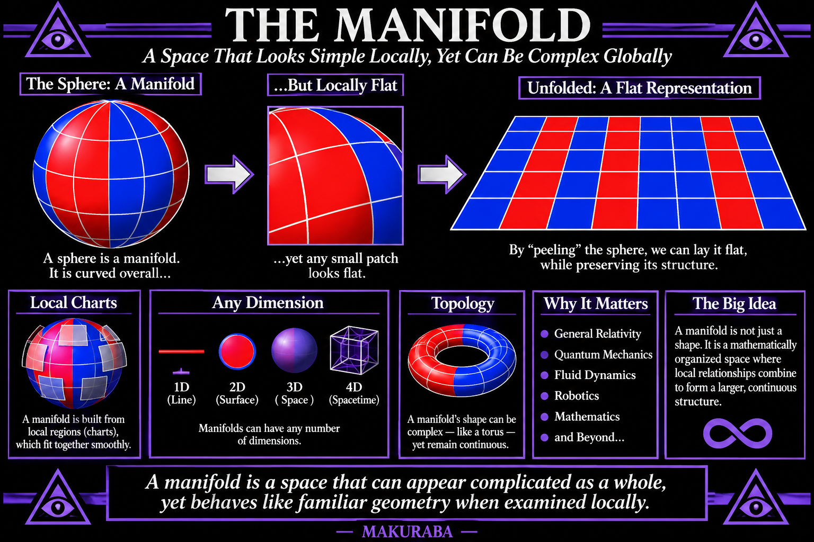
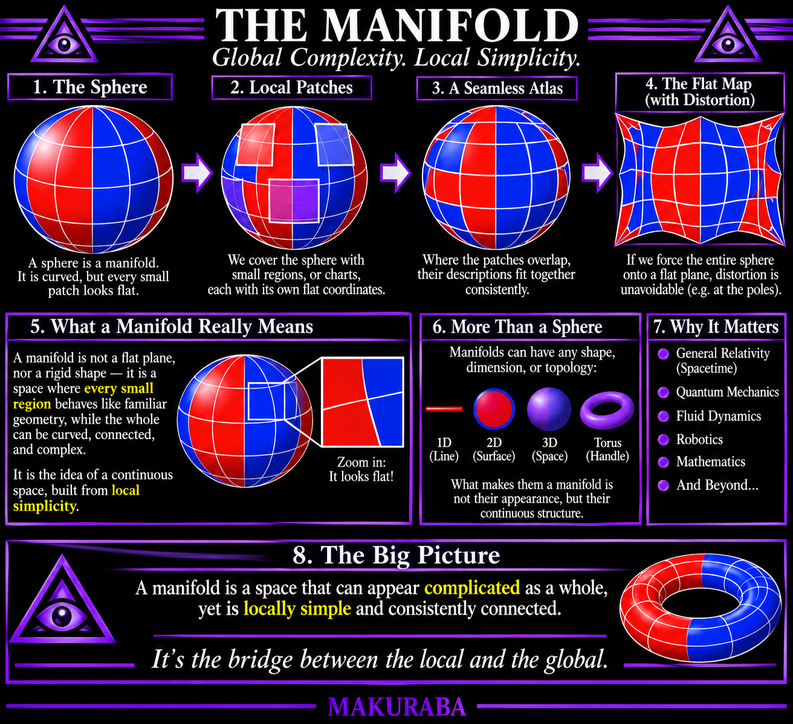

Manifold


The Manifold
An Introduction to Geometric Continuity
A manifold is a mathematical space that can appear complicated when viewed as a whole, yet behaves like ordinary, familiar geometry when examined locally.
Imagine the surface of the Earth. Viewed from space, it is a sphere: curved, continuous, and finite. But if you stand on a small patch of its surface, the ground appears relatively flat. You can walk in different directions, measure distances, and establish coordinates without needing to account for the curvature of the entire planet.
This is the central principle of a manifold: a space whose local structure can be understood through simpler geometric descriptions, even when its overall structure is considerably more complex.
Manifolds are not necessarily flat, spherical, or even three-dimensional. They can have any number of dimensions, and their geometry can be curved, distorted, connected, or otherwise structured. What makes something a manifold is not its appearance, but the mathematical consistency of its local neighborhoods and how those neighborhoods connect.
- Locality and Continuity
A manifold is constructed from local regions, often called charts. Each chart provides a coordinate system for describing a portion of the space.
Where charts overlap, their coordinate descriptions must fit together consistently. This allows the manifold to be understood as one continuous mathematical object rather than a collection of disconnected pieces.
- Dimensions and Geometry
The dimension of a manifold describes how many independent coordinates are needed to specify a position locally.
- A line is a one-dimensional manifold.
- A surface is generally a two-dimensional manifold.
- Ordinary three-dimensional space is a three-dimensional manifold.
- Spacetime, in general relativity, is modeled as a four-dimensional manifold.
Importantly, the number of dimensions does not determine whether a manifold is curved. Curvature is an additional geometric property.
- Topology and Transformation
Topology concerns the properties of a space that remain unchanged under continuous deformation.
A sphere and a cube, for example, have equivalent surface topology: one can be continuously reshaped into the other without cutting or joining anything.
Differential geometry extends this investigation by studying measurements, curvature, distances, and directional relationships within the manifold.
- Why Manifolds Matter
Manifolds provide the mathematical foundation for describing systems that cannot be adequately represented by ordinary flat geometry.
They appear throughout:
- General relativity and gravitational physics.
- Quantum mechanics and configuration spaces.
- Fluid dynamics and continuous fields.
- Robotics and multidimensional motion.
- Differential equations and mathematical physics.
They allow complex relationships to be represented through a coherent underlying space.
- The Deeper Principle
Perhaps the most interesting feature of a manifold is that its total structure need not be immediately apparent from any individual portion of it.
A local observer can describe their immediate surroundings without possessing a complete description of the entire space. Yet every local description participates in a larger geometric structure.
This distinction between the local and the global is fundamental.
A manifold is therefore not simply a shape. It is a mathematically organized space in which local relationships combine to establish a larger continuous structure.
MAKURABA — Foundational Encyclopedia